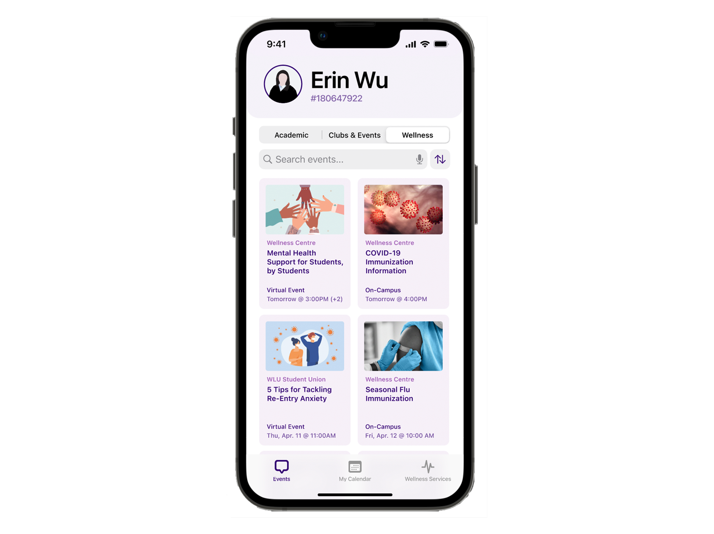
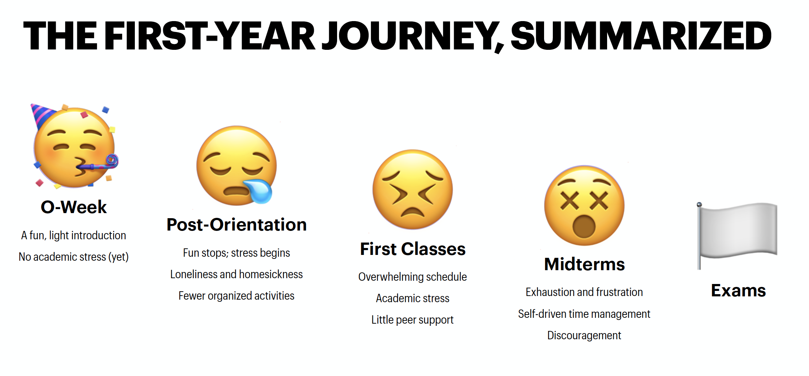
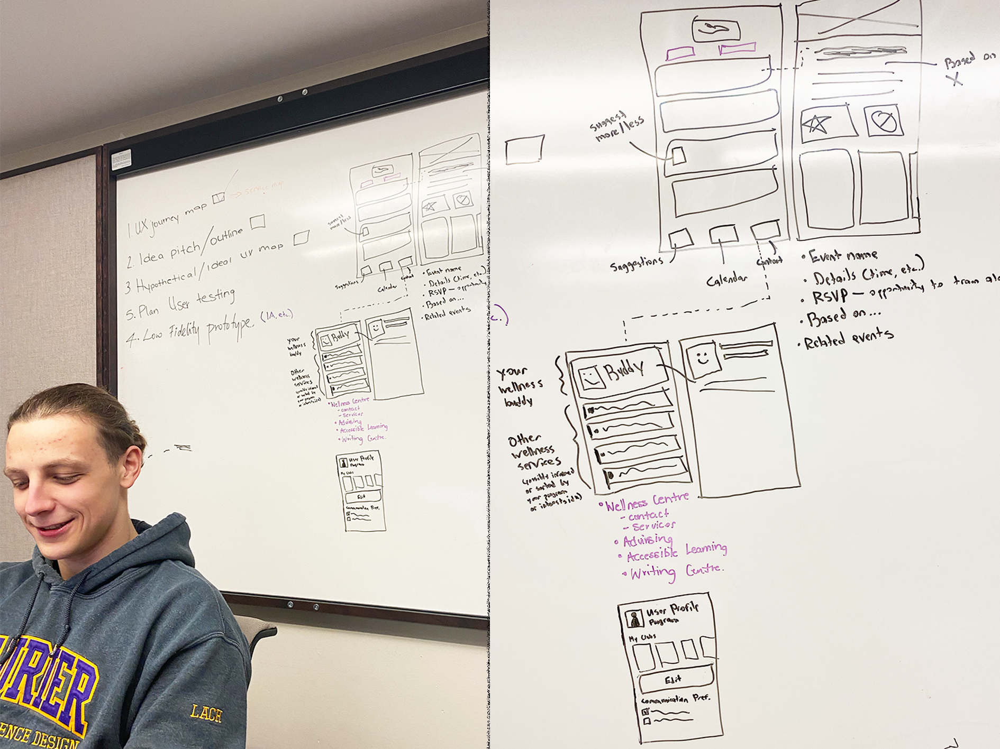
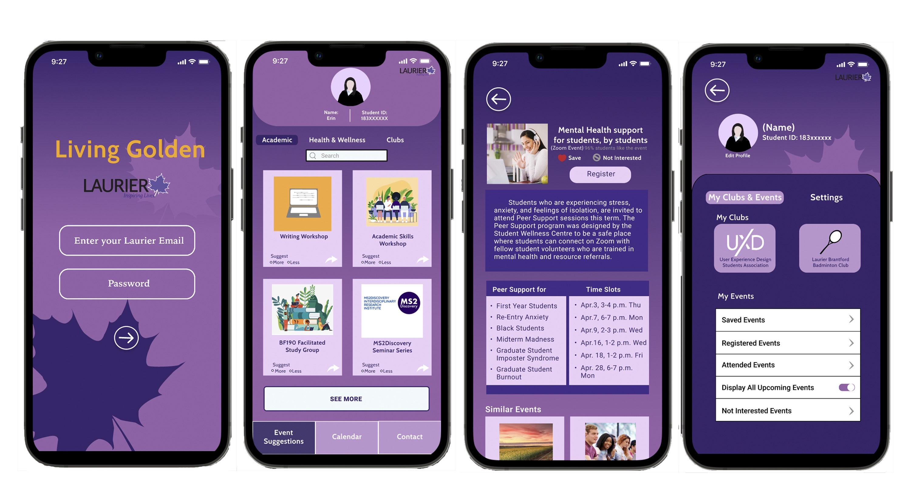
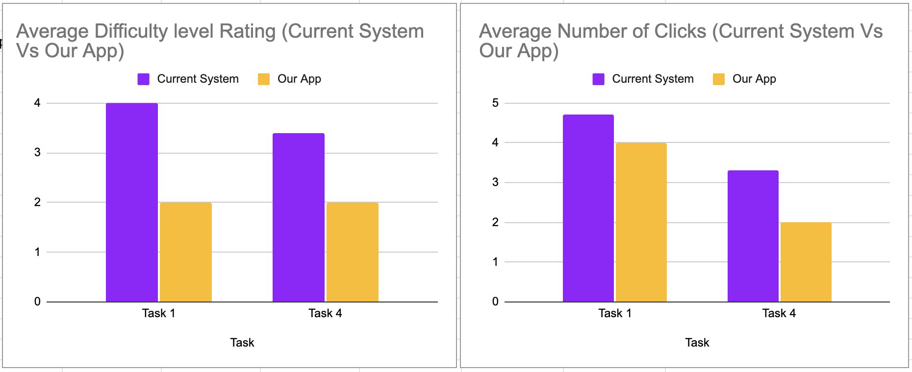
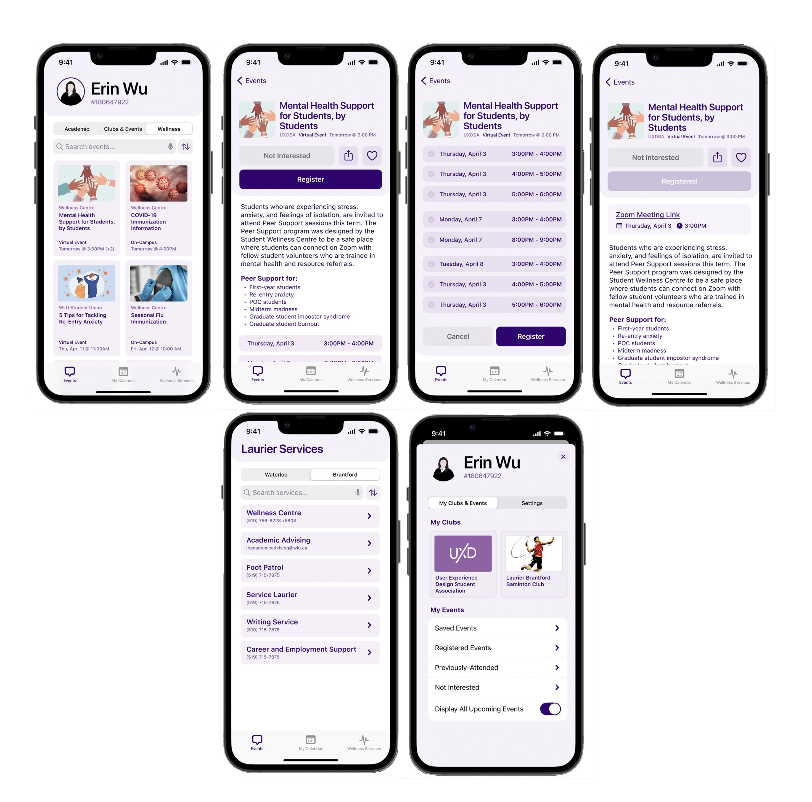

Living Golden

Project Details
During my fourth year at Laurier, I completed my capstone project with the wellness center.
Laurier’s Student Wellness efforts have a communication problem. While the school offers a wide variety of support services, many students are unaware and thus are unable to take full advantage of this support network when they need it most.
This problem was addressed by a group of fourth-year students in collaboration with a team of first-year students. During the first half of the project, a team of first years helped my team conduct research.
Team
- 5 fourth year students
- 4 first year students
My role
- Spoke person - I was in charge of providing updates to our client and professor. This included email and video call communications.
- Mentor - With one other team member, we provided encouragement and support to the first years. This included attending their group meeting to provide suggestions and providing moral support during their final presentation.
- User Interviews, Journey Maps, Low Fidelity Prototype and User testing - This was conducted together as a team.
- Creation of the Final Report - This was created with two other team members
Client
Unless Design - Design Agency contracting with Wilfrid Laurier University
The Process
1
Initial Research
Research with the First Years
My Team and I guided a group of first years in conducting surveys and interviews. These surveys and interviews enabled us to get more information on students behaviours and preferences.
Meta-Analysis
A Meta-Analysis was done to find similarities and differences between the report Unless Design had given us and research we had conducted with the first year students.
Findings:
- There was a disconnect between the path Laurier chose to communicate to their students and the paths students perceived to receive information.
- Wellness acts as a safety net to catch students when they fall rather than promote well-being in every aspect of the university lifestyle.
- Navigating through fragmented elements of a system creates a fractured student experience.
- The information found on the Laurier website is unclear.
Link to the Meta-Analysis
2
Additional Interviews
Interviews were conducted with students from Laurier and other universities. We wanted to get a deeper understanding of the current problems at Laurier and also a competitive analysis of how other schools are handling these problems. In total, we had interviewed 15 students, 10 from Laurier, 5 from other schools including UofT, McMaster, and Conestoga.
Findings:
- Many schools suffer from vague and/or irrelevant communication practices
- Laurier campus events and activities are under-marketed – and typically buried within irrelevant communication frameworks
- Difficult to parse the services on the Wellness Centre page
- Joining a club or association requires proactive action on the part of students
- Students are so overwhelmed with school that they don't have time to seek help
3
Journey Map
A Journey Map was created to map out all the critical points, a first-year student goes through to fully understand the students. Everything from registering for courses, attending o-week, and studying for exams was considered to fully understand the first-year experience. The action, feelings, pain points and interactions a student goes through during each critical point were looked at.

Link to the full journey map
4
Ideation
With the knowledge that we had gained, we had brainstormed a few ideas. As a group, We debated and discussed the best one to test out.
Ideas:
- Texting service for subscribed alerts for users
- Provide a go to representative for each group of students
- A combination of the 2 above
- An automated AI system that sends notifications when detected to be needed
Link to the full description of the ideas
5
Low fidelity prototype
Through an in-person meeting, we created a sketch on the whiteboard to start visualizing the application.

6
Medium Fidelity Prototype
A medium Fidelity Prototype was then created based on the sketch.
Components of the App includes:
- One place for all the on-campus events
- Built-in social features
- Integration into student's lives and schedules
- Quick access to Wellness services

Link to the Medium Fidelity Prototype
7
User Testing
To verify that the prototype is usable and easy to follow for incoming students during periods of stress, we conducted an A/B test: test 5 users on the current Laurier website, and 5 users on our medium-fidelity prototype. We asked users to use a synchronous think-aloud protocol during the test.
Findings:
- Currently, students usually google Laurier information to find information
- Users feel that our prototype is easier to find school information compared to the current school system.
- Users have fewer clicks when they are testing our App compared to the current system

Link to the user test Analysis
8
High Fidelity Prototype
As the user test validated our prototype, a high fidelity prototype was made with a few refinements.
Refinements:
- Updating several language terms
- Placing greater emphasis on social events
- Improving information density and contrast

Link to the High Fidelity Prototype